ExcelVBA
■Excel VBAとは
VBAとは『 Visual Basic for Applications 』を省略したもので、簡単に言えばプログラミング言語の１つです。
Excel内でさまざまな操作を実行するための機能で、
複雑な操作を簡単に行えるようになるため、業務の効率化などに非常に役立ちます。
それでは早速、VBA問題ブックを開いて解いていきましょう。
※問1～9までは、Excelのシート上に実行ボタンを設置し、
それを押すと問題文の処理が行われるようにすること。
VBA問題ブック
問1
A1セルに「HelloWorld」を入力する。
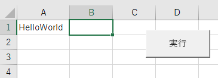
問2
A1セルに入力された数字が偶数か奇数か判定し、結果をB1セルに表示する。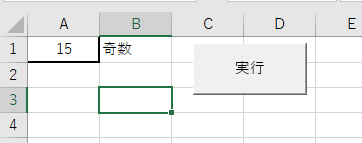
問3
C5セルに整数を入力し、その数分C6セルにアスタリスクを表示する。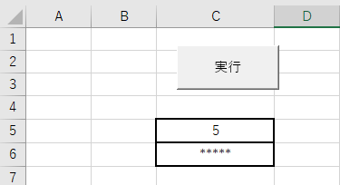
問4
表の中の「OK」という文字を太文字にする。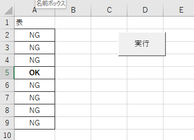
問5
B2セルに整数nを入力し、100/nの結果をB3セルに表示する。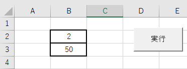
問6
A1～A7セルに1～7を入力し、対応する曜日をB1～B7セルに表示する。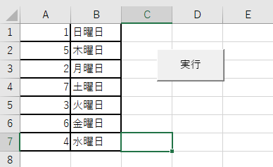 1：日曜日、2：月曜日・・・7：土曜日
問7
A1セルに整数を入力し、1～入力した整数までを10倍した数値をB1セルから下に表示する。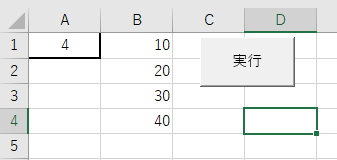
問8
C1セルとD1セルに入力された文字が同じ文字か判別する。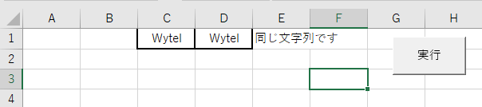 その結果をE1セルに表示する。
問9
A1～A10セルに入力された数値を昇順に並べ替える。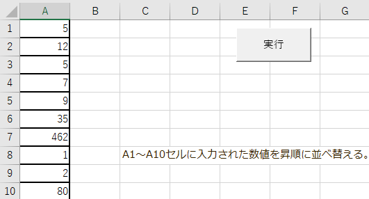 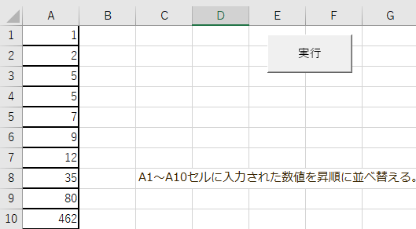
問10
ユーザーフォームを使い、新規ワークブックを開くボタンを作成する。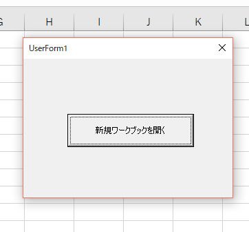
問11
ユーザーフォームを使い、シート内の文字列を検索できるようにする。検索した文字列があったら、セルを赤くする。
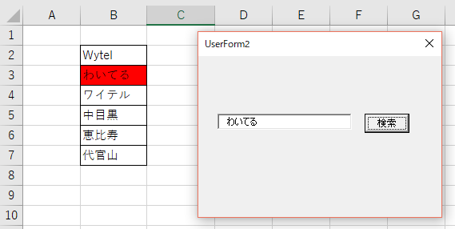
問12
ユーザーフォームを使い、入力した数字が5以上なら、メッセージボックスで5以上ですと表示する。5未満なら、メッセージボックスで5未満ですと表示する。
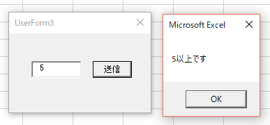
問13
ユーザーフォームを使い、A1～A10セルに入力されたデータを、リストボックスに表示する。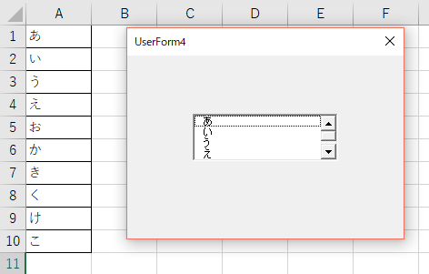
問14
ユーザーフォームを使い、血液型を選択するオプションボタンを設置し、選択されたものをメッセージボックスで表示する。
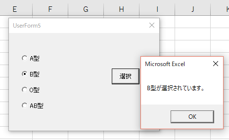
問15
ユーザーフォームを使い、入力された数値1と数値2の和を求める。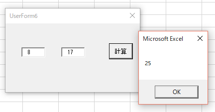
応用問題
名簿管理ツールを作成してください。名簿シートにユーザーフォームから、検索・編集・追加・削除ができるようにしてください。
VBA応用問題ブック
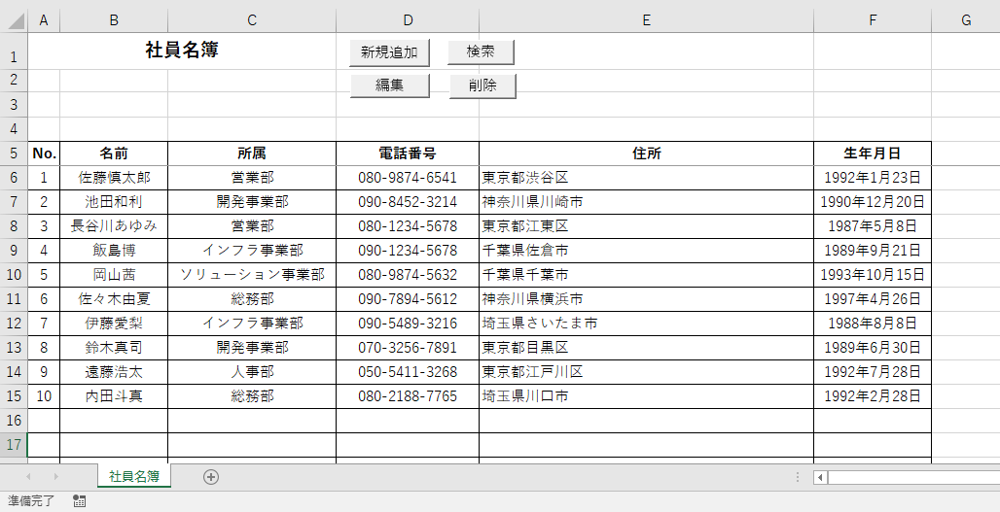
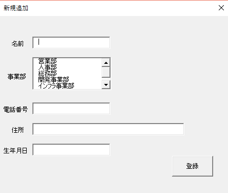
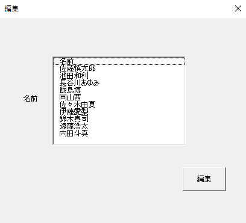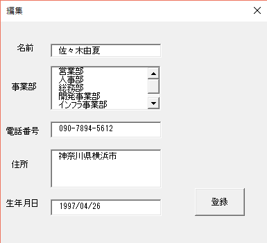
※検索画面では、検索結果のセルが選択されるようにしてください。
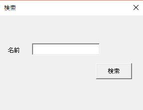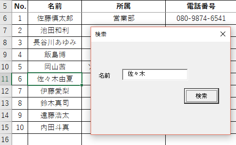
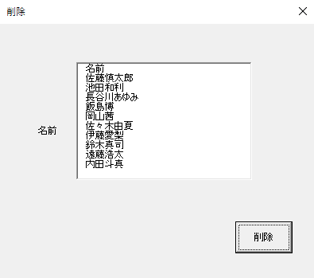